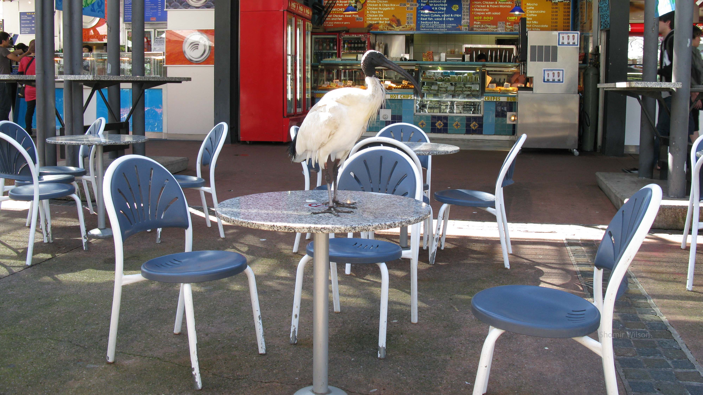
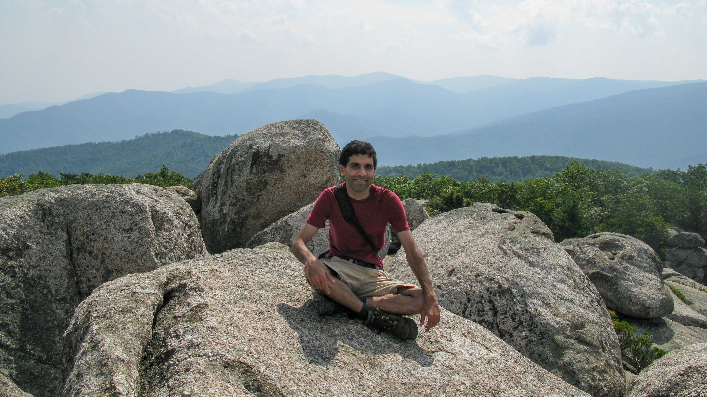
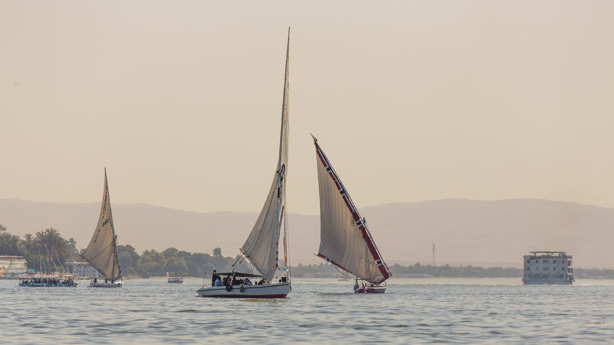
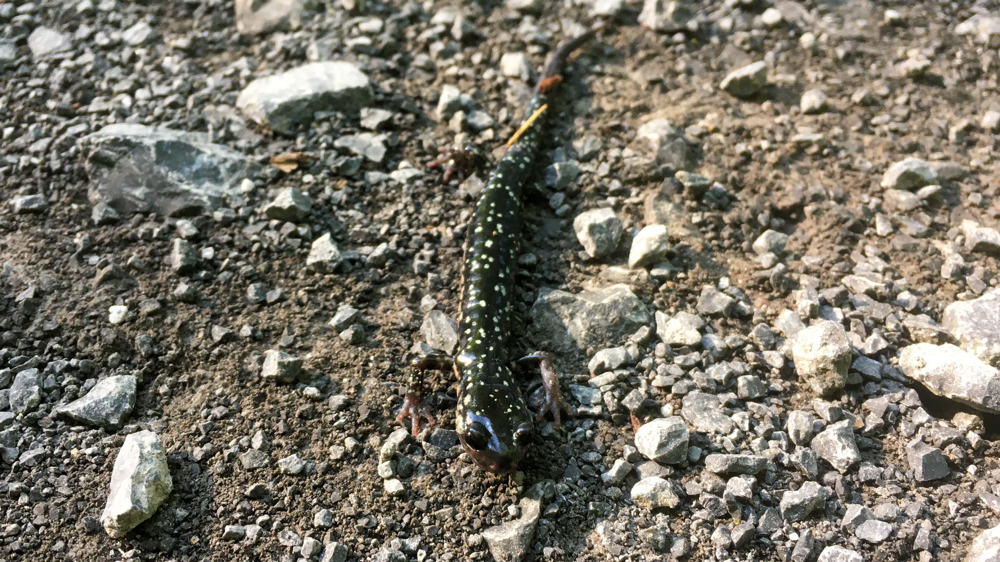
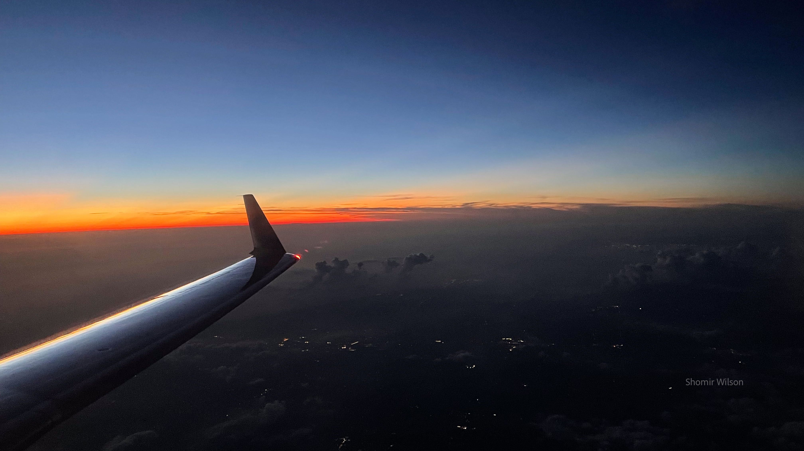

This page is part of Travel and Meaning and my advice pages.

August 7, 2009
Marsfield, Australia
I look deranged, I thought as I walked from the train station to the house where I was staying for the Australian winter. My clothes were damp from the rain, I had ibis excrement on one of my pant legs, and I carried a broken umbrella that would neither fully open nor shut. I felt exhausted, my hair was uncombed, and I was still wearing yesterday’s clothes.
I was returning from a trip to Singapore for a conference, and on my final day there I had explored the city. After bicycling in the palm forests on Pulau Ubin, I returned to the hotel to retrieve my backpack and then to the airport for my flight back to Australia, arriving at the gate with little time to spare. I spent the night on the plane, and in the morning I was to connect in Brisbane for an onward flight to Sydney. When we arrived too late for the transfer I was rebooked on a connecting flight in the late afternoon, and—as a first—I used the long layover to go exploring. I took a train into downtown Brisbane.
The ibis excrement had come from witnessing a fight between two birds while I ate lunch at an outdoor restaurant in the city center. I had become familiar with Australian white ibises in public places during my winter in Australia; they were about two feet tall, had long beaks, and were unafraid to demonstrate their interest in human food. Initially one of them admired my lunch while standing on an adjacent table, where it relieved itself. Soon afterward another one arrived to battle for the same table, and in the ensuing fight one of them kicked the excrement onto my pants. Still new to the idea of overnight flights, I hadn’t thought to pack a change of clothes.
The broken umbrella happened shortly after I arrived in Sydney. A rainy squall was in progress, and big drops were falling as I exited the airport. The umbrella broke as I tried to open it, and it broke more when I tried to close it. I had noticed that Australia lacked public trash bins, but it had never been as relevant. Awkwardly, I carried the umbrella on public transit and all the way home.
The exhaustion and the unkemptness didn’t matter. I couldn’t recall ever before feeling as satisfied with a 48-hour period of travel. My research outcomes from the winter seemed like they would be modest, but I had found skills, adventure, and a new category of opportunities to look for in the future. I wanted to see more of the world.

August 18, 2011
State Route 3, Near Culpeper, Virginia
Culpeper was the next town to the west of Fredericksburg, where I grew up, and the drive between them was 45 minutes on a rural highway through farmland. I had spent the day hiking Old Rag Mountain, 45 minutes further west of Culpeper, with a friend from college. Afterward we ate at a diner in Culpeper and parted ways there. I drove home just after dusk, muscles fatigued but pleased with how the day had gone. In the distance to my left I saw lightning from a distant thunderstorm, and I liked how it completed the scene of a summer evening.
The "lost summer", as I had come to think of it, was drawing to a close. I was nearing offers for two postdoc positions to end my post-PhD unemployment, one at a university in Pittsburgh—the same one where my girlfriend was working on her PhD—and one in California. Both had appealing qualities, but the opportunity in Pittsburgh would be a professional victory as well as a personal one, ending six years of long-distance relationship by making the distance much shorter. Incredibly, the outcome would be better than any of my original post-graduation plans.
I had traveled between Fredericksburg and Culpeper many times, first as a child in the family car and then on my own, but I hadn't thought about the meaning of the distance. Growing up in a suburban area, a certain kind of homogeneity and newness was pervasive, and it seemed possible the rest of the world could be no different. However, there was rural space between the towns and a difference in character over a relatively short distance. When my father had called for an update earlier that evening, I said to him "I'm at a diner in Culpeper", and there was something vaguely satisfying about the idea that I was in the next town over. Great distances were profound—I thought about the number of times I had crossed oceans and what those trips had meant to me—but shorter ones still had meaning.
In early September I would receive and accept an offer for the postdoc in Pittsburgh. I moved there and began working soon after.

March 17, 2018
Luxor, Egypt
At sunset I sat in a reclining chair by an outdoor pool, thinking and writing. It felt like a scene out of someone else's travel: rarely ever did I spend time poolside at hotels, though I often wrote. I looked up at the blue-gray sky and saw a single star come out, or possibly a planet. A small group of guests walked around the pool and took pictures. One decided to swim.
I was visiting Luxor as a side trip after a work trip to Cairo, where a university had asked me to give a week of guest lectures about artificial intelligence ethics. By day I worked and explored Egypt, both modern and historical, and by night I exchanged emails with two universities back in the US that wanted to hire me into faculty positions. Both would be opportunities to move from my first university as tenure-track faculty to places that fit me better. The process was unremarkable—professors have careers, and sometimes they move—but the setting, writing emails on my laptop in dimly-lit hotel rooms in Egypt, made it feel grandly conspiratorial.
I had spent that day at archaeological sites in the area, and in the evening I went for a walk around the hotel compound. A travel agency recommended by my host university had booked the side trip for me at a bargain price. The hotel seemed like it had once been a luxurious resort, but many facilities—tennis courts, volleyball courts, tiki bars, various outbuildings—had fallen into disrepair, and the number of guests was far below capacity. The property included a waterfront on the Nile River, but it seemed like an afterthought; I walked to it and stood there alone for a few minutes, watching fish swim among tall grasses in the water. Meals were included in my stay, but the only restaurant I had found served bland, tepid food. The front desk said two more restaurants existed somewhere but one was "for the Chinese", implying I wasn't allowed there. I would try to find the other for dinner. Outside the compound, no more restaurants were nearby.
I planned only to sit and let my mind wander, as I imagined poolside people at a hotel typically do, but I kept thinking about phrases I could use to describe having spent six consecutive years on the academic job market. "I am not a reasonable person" was one of them, although I didn't feel the badge of honor that people sometimes associate with unreasonability. About the kind of job I wanted, to be tenure-line at a major research university: "I took the last one off the shelf. It's unclear when they will be back in stock. Rumor has it that they are being discontinued, in favor of less aspirational alternatives." I wrote them down, and they coalesced into a narrative. The idea of sharing it, perhaps on social media, was appealing. I could create meaning—in the sense of narrative—from what I had done, and people might learn from it. After all, I was a professor.
Since then I've written and shared about many of my difficult experiences as a student and a junior faculty member. I often receive thanks from strangers on social media, at conferences, and via email.

July 25, 2020
Near State College, Pennsylvania, USA
I called it "The Hundred-Mile Summer": I would go on ten walks of at least ten miles each, most of them beginning and ending at my house. I formulated the idea after the first couple walks, from my house to nearby mountain ridges; after those successes I realized that a triple-digit total number of miles was feasible. The pandemic had eliminated opportunities for travel, and I wanted to feel distance.
I was walking on a trail that cut between two farm fields, and a cloud of jumping insects made a continuous wake in front of me. To get there, I had passed through State College's orderly street grid, then its suburbs with winding streets, and then a housing development under construction. I was on the eighth ten-plus-miles walk, this one from my house to Jo Hayes Vista, a scenic overlook on a ridge south of State College where a highway crossed a trail. The ridge dominated the view in front of me. Soon I would enter the forest and follow hiking trails to the top.
The walks had improved my understanding of the local geography. Prior to the pandemic I already walked often—my daily commute to work had been a half mile on foot, and downtown was just another half mile further—but now, many places that I had only known by car made sense in a different way. I explored public parks that I had previously driven by; one reminded me of the English countryside, and in another I sat on a hillside and listened to an outdoor private concert in a nearby yard. I found a swamp in the woods that hosted many birds, and I would return there many times in the coming years to birdwatch. I discovered a walking path to the airport, but it arrived on the side far from the terminal; as I walked along the perimeter fence, a sheepish police officer drove up and asked me if I was out for a walk. (I said yes and he left me alone.) I used an app on my phone that claimed to have a map of all the local trails, but I found many in the woods to be impassable or nonexistent. Sometimes I pressed through difficult terrain or thorny vegetation only to discover later that a clear path existed nearby.
I thought about the pandemic. Working from a spare bedroom in our house, my weekdays had become endless parades of videoconferences and emails. I missed people and places, and I missed the special things that happened when the right combinations of people and places came together. I considered what it would mean for human civilization if pandemic restrictions continued indefinitely, with in-person gatherings considered verboten and travel discouraged except for emergencies. Regardless of what travel meant to me, it meant a lot to humanity: curiosity, opportunity, diplomacy, adventure, and survival. We define ourselves partly through our distance from other things, but crossing those distances strengthens our sense of self rather than subtracting from it.
The farmfields ended at a creek, which the trail crossed on a wooden bridge. I paused on the bridge to look for fish, but I saw none. A short distance further, the trail crossed a highway that was depicted on the Western Pennsylvania page of my Rand McNally road atlas as bypassing State College at a distance, not going through it. The fact that the distance I had walked was perceptible on that map was satisfying, and I still had further to go.

August 6, 2022
Iowa, USA
"On the grid", I thought somewhere over Iowa's vast square patterns of farmland stitched together by roads. I was as disconnected as I could be while on a plane, having forgone wifi, but I was on the grid. I was returning home to State College from a trip to Colorado, where I had spent a couple days in Rocky Mountain National Park and then in Denver attended a professional event, the original impetus for the trip.
At DEN our Boeing 757 had taken off in the signature "hot and high" conditions it was designed for—97 degrees Fahrenheit, runway altitude a mile above sea level—and now we were crossing vast agriculture with small towns and flocks of windmills. I thought about states I hadn't visited yet but had flown over many times. I wondered what it would be like to spend a week in one of the small towns we flew over, to have business there. I imagined any remarkable observations taking some time to emerge. The value of the patience, while things elsewhere competed for my attention, would be difficult to predict.
I also thought about the drive from Denver to Estes Park on the night I arrived in Colorado. I had picked up the rental car at midnight and expected to arrive at my hotel in 90 minutes, but it took closer to two hours because of road work on an isolated, mountainous stretch of US 36. Construction to repair one lane of the road left only one lane for both directions to share, alternating in long intervals. A flag man held a stop sign, sometimes talked on a radio, and danced a strange rhythmless jig that included theatrically tipping his hard hat. I couldn’t tell if he was trying to entertain us or merely to remain awake. There, too, no internet was available. Watching the man dance was the only option for mental stimulation while waiting for him to flip the sign around to "SLOW" and let us go. I didn’t appreciate that at the time, but I did later.
Disconnecting while traveling comes in many forms, but it takes some effort to get all at once. The trails, scenic viewpoints, and parking lots in Rocky Mountain National Park were crowded in an illustration that the new "timed entry" scheme was wholly necessary, and possibly not restrictive enough. At times it seemed like we were a crowd shuffling through an enormous nature-themed equivalent of the Louvre. The crowd detracted from the appeal, but I was part of the crowd. I tried to be polite and respectful of what we were there to see, at least. I resisted the urge to climb on rocks that were off limits. I watched parents encourage their children to climb off-limits rocks for photo ops.
I did climb on a few non-prohibited rocks, and my favorite was one I had lunch on, next to a trailhead parking lot. I faced away from the artifacts of civilization, ate, and thought. Squirrels scampered around me and unseen insects clicked. I thought again about what I had career-wise and the path to the rest and how it had taken a long time to get them. It wasn’t as dolorous of a topic as it used to be. Yet there it was: work again. Off the grid, but in a metaphorical sense the laptop was not folded and put away. After all, I was on a work trip that I had prefixed with a few days' vacation. Later I spent a day and a half at a workshop in a Hyatt ensconced in a suburban office park several miles from downtown Denver. The work was interesting and vital, but when I looked out the window of my hotel room I thought about the anonymity of the view. It could have been in Northern Virginia, where I had stayed at another high-rise hotel a few months prior for a different work trip.
Not long after the view over Iowa we landed in Chicago. When I exited the jet bridge into the terminal I saw an alphabetized departure board, with Eau Claire and Edinburgh listed one after the other. I had spent a year working at the University of Edinburgh, but I had never visited Eau Claire, in Wisconsin. The proximity on the board of two very different places was incidental, and remarkable. Opportunities of the world appeared to be there for anyone, and getting what one wanted never looked so easy. It was an illusion—my privileges included a stable career and, at that moment, a boarding pass—but a poetic appeal remained. My college self, 20 years ago, wanted to notice things like that. There had never been a guarantee I would find them, but it turned out that I did.
Continue to the Afterword or go to the Table of Contents.